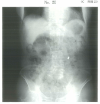

歯科治療中に異物（クラウン、インレー、抜去歯など）を落下させた場合、気道に入ったか消化管に入ったかで対応が異なる。
| 用語 | 行き先 | 症状 |
|---|---|---|
| 誤嚥 | 気道（気管・気管支） | 咳嗽、呼吸困難、チアノーゼ、窒息 |
| 誤飲 | 消化管（食道・胃・腸） | 多くは無症状 |
胸腹部X線撮影で異物の位置を確認する。
| 位置 | 対応 |
|---|---|
| 気道内 | 内視鏡的除去（気管支鏡）を依頼 |
| 消化管内（症状なし） | 経日的にX線撮影で経過観察 → 自然排泄を待つ |
| 消化管内（症状あり） | 消化器内科に相談 |
異物が気道に入り窒息した場合は、緊急対応が必要。
万国共通の窒息サイン（universal choking sign）：両手で喉を押さえる動作
| 重症度 | 症状 |
|---|---|
| 軽度 | 咳や発声が可能、呼吸困難 |
| 重度 | 発声不能、会話不能、チアノーゼ |
| 対象 | 方法 |
|---|---|
| 成人・小児（1歳以上） | ハイムリック法（腹部突き上げ法） |
| 乳児（1歳未満） | 背部叩打法＋胸部突き上げ法 |
| 妊婦・肥満者 | 胸部圧迫法 |
腹部突き上げ法は腹部を圧迫できないため適応外。胸骨圧迫の要領で胸部を圧迫し、異物を排出させる。
全身麻酔では、術前の経口摂取制限が重要。
全身麻酔中は意識消失・咽頭反射低下により、胃内容物の逆流→誤嚥性肺炎のリスクがある。
| 摂取物 | 最低絶飲食時間 |
|---|---|
| 清澄水（水、お茶） | 2時間 |
| 母乳 | 4時間 |
| 人工乳・軽食 | 6時間 |
| 固形食 | 6〜8時間 |
77歳の男性。下顎左側第二大臼歯のクラウンを試適中に誤って口腔内に落とし、見失ってしまったためエックス線写真撮影を行った。撮影したエックス線写真（別冊No.20）を別に示す。患者は特に臨床症状を訴えていない。
続いて行う対応で適切なのはどれか。1つ選べ。

【解説】X線でクラウンは消化管内（胃）に確認される。症状がないため、経日的にX線撮影で経過観察し、自然排泄を待つ。催吐薬（a）は異物による損傷リスクがあり不適切。内視鏡的除去（e）は気道異物や症状がある場合に行う。
全身麻酔において患者の術前経口摂取を制限する目的はどれか。1つ選べ。
【解説】全身麻酔中は意識消失・咽頭反射低下により、胃内容物が逆流すると誤嚥性肺炎を起こすリスクがある。これを防ぐために術前の経口摂取を制限する。
妊娠後期の妊婦に対し、気道異物を排出させるために行う適切な対応はどれか。1つ選べ。
【解説】妊娠後期の妊婦は腹部が大きく、ハイムリック法（腹部突き上げ法）は適用できない。胸部圧迫法で異物を排出させる。下顎挙上・人工呼吸は気道確保・換気であり異物除去法ではない。